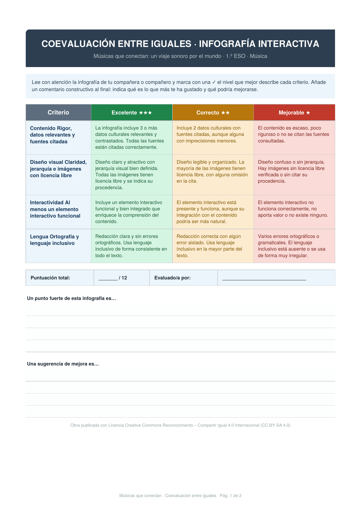
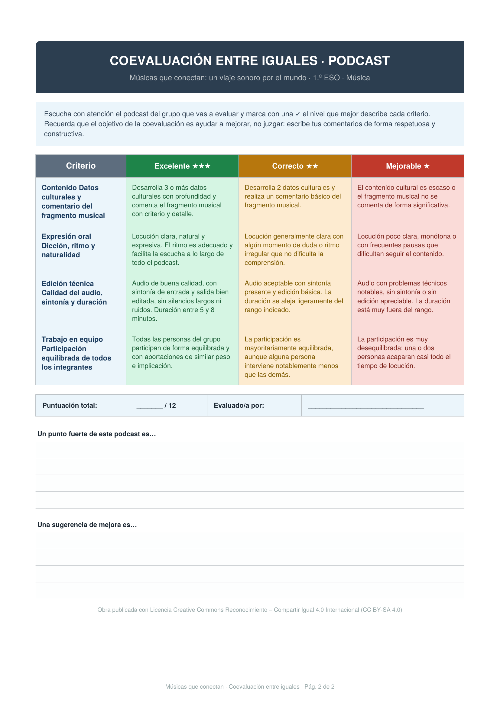

¿Cómo vais a ser evaluados?
A continuación podréis ver la rúbrica de evaluación del proyecto, así como los criterios de evaluación para la infografía y el podcast.
A continuación podréis ver la rúbrica de evaluación del proyecto, así como los criterios de evaluación para la infografía y el podcast.
| Producto/momento | Instrumento | Quién evalúa | Cuándo | |
|---|---|---|---|---|
| Criterios 1 | Diario de aprendizaje (entradas de OneNote) (2.5) | Lista de cotejo (1.75) | Docente (1.50) | Al finalizar el proyecto (1.25) |
| Criterios 2 | Infografía interactiva (2.5) | Rúbrica analítica (1.75) | Docente y coevaluación entre iguales (1.50) | Sesión 5 (1.25) |
| Criterios 3 | Podcast grupal (2.5) | Rúbrica analítica (1.75) | Docente y coevaluación entre iguales (1.50) | Sesión 5 (1.25) |
| Criterios 4 | Participación y trabajo en equipo (2.5) | Observación + diario + autoevaluación (1.75) | Docente + autoevaluación (1.50) | A lo largo del proyecto (1.25) |
Criterios principales de la rúbrica de la infografía
Contenido: rigor, datos relevantes, fuentes citadas
Diseño visual: claridad, jerarquía, uso de imágenes con licencia libre
Interactividad: al menos un elemento interactivo funcional
Lengua: corrección ortográfica y uso de lenguaje inclusivo
Criterios principales de la rúbrica del podcast
Contenido: datos culturales, comentario del fragmento musical
Expresión oral: dicción, ritmo, naturalidad
Edición técnica: calidad del audio, sintonía, duración
Trabajo en equipo: participación equilibrada de todos los integrantes
Descarga estas rúbricas para realizar la coevaluación entre iguales.
1. RÚBRICA DE LA INFOGRAFÍA

2. RÚBRICA DEL PÓDCAST

Obra publicada con Licencia Creative Commons Reconocimiento Compartir igual 4.0